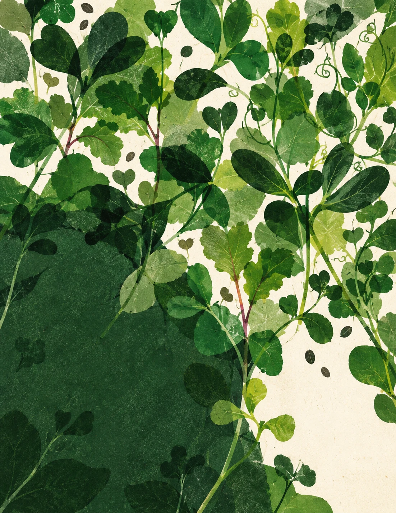
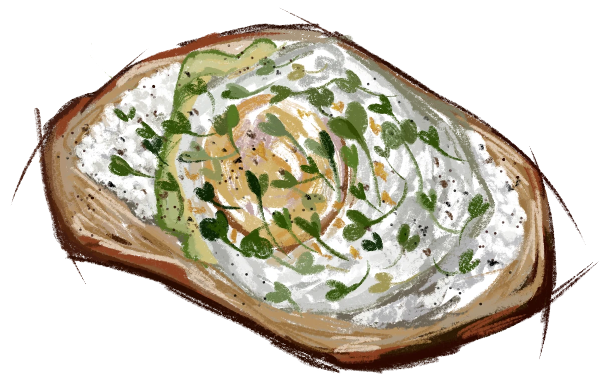

Making vitamin intake easier with fresh, locally grown microgreens.

What are microgreens?
Microgreens are young vegetable and herb plants, cut 1–3½ weeks after planting. You eat the stem and first leaves.
more vitamins and carotenoids, by weight, than the same plants fully grown, across 25 microgreen varieties tested.
What we're growing
Tap a green for taste, grow time and price
Broccolimild$5
TasteMild and fresh, like a crunchy baby broccoli. Easy on anything.
VarietyCalabrese
Grow time8–12 days
Price$5 per 2 oz, from late October
Mustardmild$5
TasteSoft and leafy with just a hint of mustard. Not spicy.
VarietyKomatsuna (mustard spinach)
Grow time8–12 days
Price$5 per 2 oz, from late October
Pak choimild$5
TasteSweet, juicy stems and a clean, cabbage-y finish.
VarietyShanghai
Grow time8–12 days
Price$5 per 2 oz, from late October
Cilantroherby$5
TasteBright and citrusy, like fresh cilantro leaves.
VarietySlow Bolt
Grow time16–21 days
Price$5 per 2 oz, from late October
Thai basilherby$5
TasteSweet basil with a warm anise note.
VarietyThai
Grow time14–21 days
Price$5 per 2 oz, from late October
Oniononiony$5
TasteGentle green-onion flavor, like tiny scallions.
VarietyTokyo Long White
Grow time14–21 days
Price$5 per 2 oz, from late October
Garlic chivesoniony$5
TasteGarlicky and savory. The boldest of the bunch.
VarietyGarlic chives
Grow time18–24 days
Price$5 per 2 oz, from late October
Mixes
Tap a mix to see what's in it
Grown indoors in coco coir, no pesticides. Rinse before eating, keep refrigerated, use within about a week. Mustard and other greens may cause reactions in people with food allergies. Nutrients are on How it's grown.
Hi, I'm the grower
I'm a senior studying computer science at Boston University. I care about eating well in a way that's about more than macros: food that's fresh, colorful and actually tastes good.
Curious, want to help grow, or want to see how it works? Say so in the survey or email sealu@culubo.org.
Timeline
- Now–Oct 5Seeing who's interested
- Oct 6–8Seeds arrive, first trays planted
- ~Oct 17–21Broccoli, komatsuna, pak choi ready
- Late OctCilantro, Thai basil, onion, garlic chives ready
- After thatFirst Saturday pickups
Dates are estimates. Plants keep their own schedule.
Get stock updates
What's growing and when it's ready. Unsubscribe anytime.
Pickup, once we're sellingSaturdays, by appointment. Tell us when you're free and we'll meet you then.
Maybe later
Pick the ones you'd try. The most wanted get grown next.